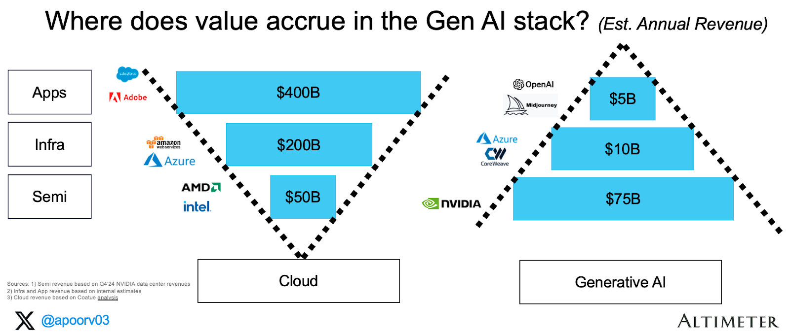
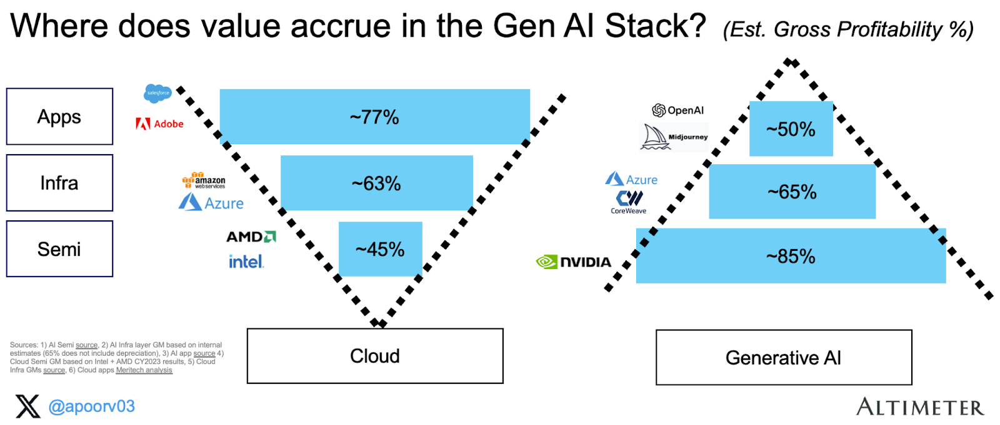
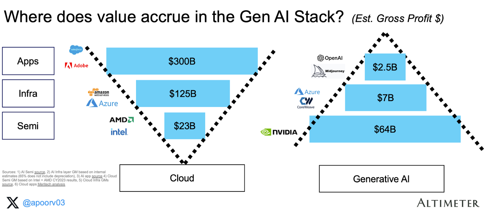
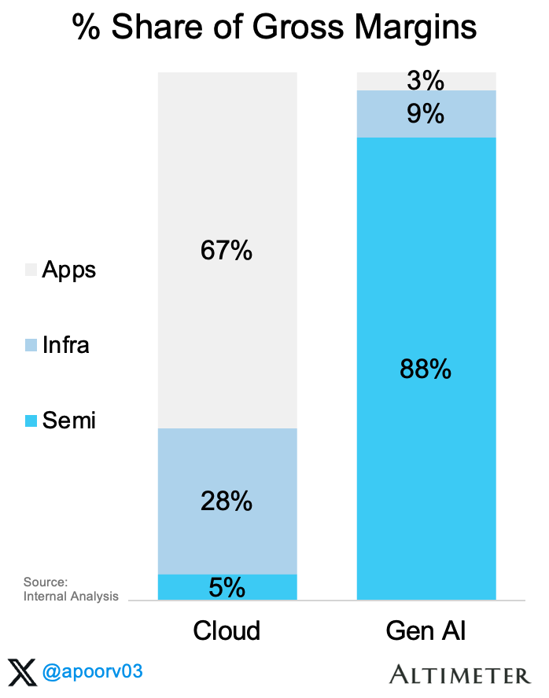
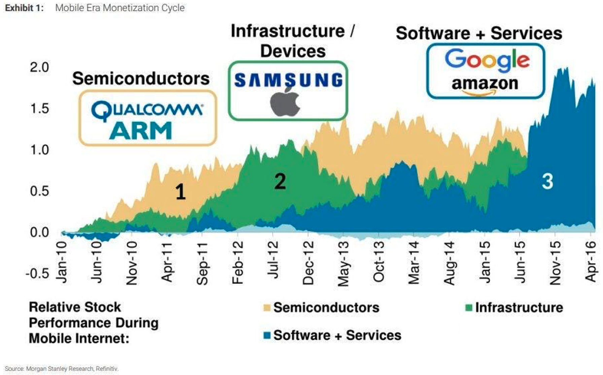
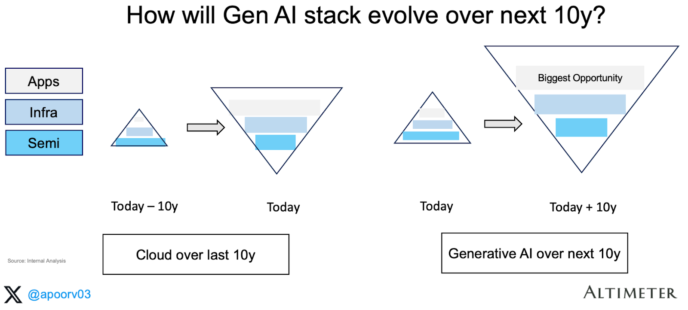
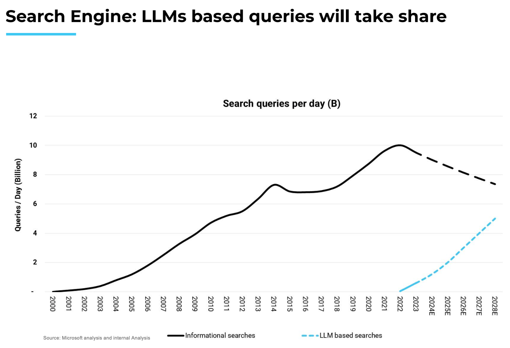

半导体层攫取了当今生成式AI约90%的利润！未来价值将流向何处，我们如何到达那里？

自"AI的iPhone时刻"以来已过去18个月¹，但发展的步伐从未放缓。我一直在思考的最大问题之一是：生成式AI的价值——无论是今天还是未来——究竟在哪里累积。
生成式AI的经济学 - Apoorv Agrawal
我将堆栈分为三个层次——半导体、基础设施和应用。以下是生成式AI收入的汇总：
半导体：英伟达在最近一个财报季度（截至2024年1月）的数据中心收入约为180亿美元。鉴于其95%以上的市场份额，我们估算该层年化收入约为750亿美元
基础设施：该层包括超大规模云服务商（AWS、GCP、Azure）以及主要的推理云（Coreweave、Lambda等）。保守估计该层年化收入约为100亿美元
应用：大语言模型（OpenAI、Anthropic、xAI等）、图像模型（Midjourney等）及其他纯生成式AI应用。部分生成式AI用例的收入可能被计入"软件"收入范畴，因此我暂且慷慨地估计该层年化收入约为50亿美元
#1 目前为止，生成式AI的价值流向了哪里？
核心结论：在当今生成式AI堆栈中，半导体层已占据约83%的收入（900亿美元中的750亿美元）。这远高于半导体在当今云堆栈中约10%的份额！

如今，生成式AI的堆栈呈现出A形，而非云的V形²：
相比之下，云经济呈现更为"直观"的价值分布——越接近终端客户的应用层攫取了最多的价值。
应用层：据估算，Anthropic的毛利率约为50-55%。我假设该层整体保持相同水平
基础设施层：我估计基础设施玩家毛利率约为65%（未含GPU折旧）。若计入折旧，该数字降至25-30%
云堆栈的盈利能力已有充分研究，超大规模毛利率除外。Azure的毛利率据估计约为63%，我们假设该层基础设施均为此水平
综合来看，总毛利高度集中于半导体层——在730亿美元总毛利中攫取了640亿美元。下图直观展示了这一分布（收入 × 毛利率%）：

值得用柱状图来直观感受这一惊人的相对比例。将100%设为系统中所有毛利润的总和。

核心结论：半导体层已占据生成式AI生态系统约88%的毛利润（而在云堆栈中，半导体仅占5%）。
#2 目前为止，生成式AI的利润流向了哪里？
我们正处于平台转移的早期阶段，半导体攫取了绝大部分价值。我不认为当前生成式AI的收入结构（倒金字塔形）会永远如此。我预计随着时间的推移，应用层将在价值链中占据同样高的比例。
同样，在云计算领域，我们首先见证了数据中心的建设，随后是云服务提供商的崛起。AWS始于2004年，在2010-2012年间获得了第一批客户（亚马逊本身于2010年切换至AWS，2012年Netflix加入）。

据此，我预计生成式AI也将遵循类似路径。我们目前处于第一局（半导体），我预计到本十年末将进入第三局（应用）。因此，鉴于我们正处于低基数起点，我认为最大的开放机会在于应用层！
以下是一个关于移动浪潮中价值如何累积的案例研究。在过去十年中，移动领域的价值首先流向半导体，然后是基础设施层，最后才到达软件层：

我认为不会。看起来英伟达的利润率已经见顶，正处于下行轨道。据SemiAnalysis分析："我们认为英伟达的利润率已经见顶。我们预计B100及未来系列产品的利润率将略有下降，而且在未来几个季度，由于H200和H20的推出，H100的利润率也将下降。"
#3 未来将走向何方？
在这一转变过程中，有几个关键问题值得思考：
我用以跟踪英伟达霸主地位的领先指标包括：
我相信AI应用的盈利能力将随时间推移而改善。有几个杠杆将有助于推动未来更好的盈利能力：
更好的定价/价值对齐：众所周知，在某些情况下，AI应用根本不盈利——尤其是对于重度用户而言，因为销售成本与使用量挂钩。
A) 英伟达能否继续维持85%以上的毛利率？
定制芯片→降低总拥有成本（TCO）：所有超大规模云服务商和Meta都在研发各自的半导体版本（Google、Microsoft、Amazon和Meta）。假以时日，这将降低总拥有成本（TCO），不仅因为去除了利润叠加，还因为可以针对特定工作负载进行优化。
模型架构的改进：我注意到多种非Transformer方法正在涌现，如状态空间模型（适用于长上下文窗口用例，如编程）、JEPA（适用于视频模型）等。
模型成本的降低：通过批处理、蒸馏、量化、专家混合等各种技术，模型成本正在快速下降。正如Bill Gurley所指出的：
我预计消费端也将经历类似的转变，从硬件层开始。与数据中心类似，消费设备将升级为AI PC/智能手机/新型态设备（如Meta眼镜、Humane Pin、Rabbit R1）。消费应用包含三个细分领域：信息（搜索）、娱乐（游戏、媒体）和交易（旅游、电商等）。搜索查询正越来越多地从信息型转向基于LLM的搜索，正如我的同事Vivek所计算的：
感谢Brad Gerstner、Sud Bhatija、Sanjiv Kalevar、Cobi B-Gantz、Omar Shaya、Jamin Ball、Vivek Goyal和Shreya Bhargava对本文的贡献。

B) 云应用毛利率为75-80%，而AI应用毛利率为0-50%，这将如何演变？
同样在娱乐领域：在游戏和媒体两方面，我们都预计价值将从创作者/生产者转向技术赋能者。同样来自我的同事Vivek：


Similarly in entertainment: between gaming and media both we expect value to shift from creators/producers to tech enablers. Again from my colleague Vivek:

Thanks to Brad Gerstner, Sud Bhatija, Sanjiv Kalevar, Cobi B-Gantz, Omar Shaya, Jamin Ball, Vivek Goyal and Shreya Bhargava for their input on this article.